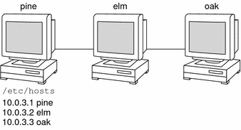
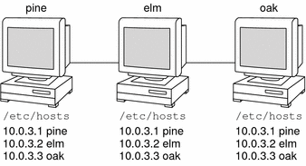
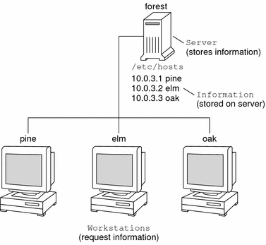
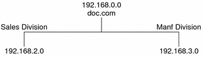
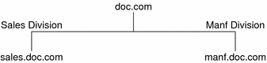
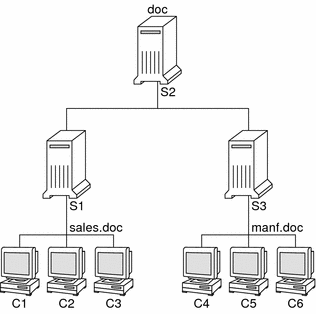
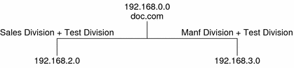
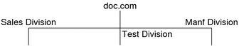
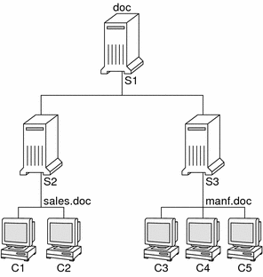

Previous
Previous
Naming and Directory Services (Overview)
This chapter provides an overview of naming and directory services used in Solaris. This chapter also briefly describes DNS, NIS, and LDAP naming services. See System Administration Guide: Naming and Directory Services (NIS+) for detailed information about NIS+.
What Is a Naming Service?
Naming services store information in a central place, which enables users, machines, and applications to communicate across the network. This information can include the following.
Machine (host) names and addresses
User names
Passwords
Access permissions
Group membership, printers, and so on
Without a central naming service, each machine would have to maintain its own copy of this information. Naming service information can be stored in files, maps, or database tables. If you centralize all data, administration becomes easier.
Naming services are fundamental to any computing network. Among other features, naming service provide functionality that does the following.
Associates (binds) names with objects
Resolves names to objects
Removes bindings
Lists names
Renames
A network information service enables machines to be identified by common names instead of numerical addresses. This makes communication simpler because users do not have to remember and try to enter cumbersome numerical addresses like 192.168.0.0.
For example, take a network of three machines that are named, pine, elm, and oak. Before pine can send a message to either elm or oak, pine must know their numerical network addresses. For this reason, pine keeps a file, /etc/hosts or /etc/inet/ipnodes, that stores the network address of every machine in the network, including itself.
Likewise, in order for elm and oak to communicate with pine or with each other, the machines must keep similar files.
In addition to storing addresses, machines store security information, mail data, network services information and so on. As networks offer more services, the list stored of information grows. As a result, each machine might need to keep an entire set of files which are similar to /etc/hosts or /etc/inet/ipnodes.
A network information service stores network information on a server, which can be queried by any machine.
The machines are known as clients of the server. The following figure illustrates the client-server arrangement. Whenever information about the network changes, instead of updating each client's local file, an administrator updates only the information stored by the network information service. Doing so reduces errors, inconsistencies between clients, and the sheer size of the task.
This arrangement, of a server providing centralized services to clients across a network, is known as client-server computing.
Although the main purpose of a network information service is to centralize information, the network information service can also simplify network names. For example, assume your company has set up a network which is connected to the Internet. The Internet has assigned your network the network number 192.168.0.0 and the domain name doc.com. Your company has two divisions, Sales and Manufacturing (Manf), so its network is divided into a main net and one subnet for each division. Each net has its own address.
Each division could be identified by its network address, as shown above, but descriptive names made possible by naming services would be preferable.
Instead of addressing mail or other network communications to 198.168.0.0, mail could be addressed to doc. Instead of addressing mail to 192.168.2.0 or 192.168.3.0, mail could be addressed to sales.doc or manf.doc.
Names are also more flexible than physical addresses. Physical networks tend to remain stable, but company organization tends to change.
For example, assume that the doc.com network is supported by three servers, S1, S2, and S3. Assume that two of those servers, S1 and S3, support clients.
Clients C1, C2, and C3 would obtain their network information from server S1. Clients C4, C5, and C6 would obtain information from server S3. The resulting network is summarized in the following table. The table is a generalized representation of that network but does not resemble an actual network information map.
Table 1-1 Representation of docs.com networkNetwork Address | Network Name | Server | Clients |
|---|---|---|---|
192.168.1.0 | doc | S1 | |
192.168.2.0 | sales.doc | S2 | C1, C2, C3 |
192.168.3.0 | manf.doc | S3 | C4, C5, C6 |
Now, assume that you create a third division, Testing, which borrowed some resources from the other two divisions, but did not create a third subnet. The physical network would then no longer parallel the corporate structure.
Traffic for the Test Division would not have its own subnet, but would instead be split between 192.168.2.0 and 192.168.3.0. However, with a network information service, the Test Division traffic could have its own dedicated network.
Thus, when an organization changes, its network information service can change its mapping as shown here.
Now, clients C1 and C2 would obtain their information from server S2. C3, C4 and C5 would obtain information from server S3.
Subsequent changes in your organization would be accommodated by changes to the network information structure without reorganizing the network structure.
Solaris Naming Services
The Solaris platform provides the following naming services.
DNS, the Domain Name System (see Description of the DNS Naming Service)
/etc files, the original UNIX naming system (see Description of the /etc Files Naming Service)
NIS, the Network Information Service (see Description of the NIS Naming Service)
NIS+, the Network Information Service Plus (see System Administration Guide: Naming and Directory Services (NIS+))
LDAP, the Lightweight Directory Access Protocol (see Part IV, LDAP Naming Services Setup and Administration LDAP Naming Services Setup and Administration)
Most modern networks use two or more of these services in combination. When more than one service is used, the services are coordinated by the nsswitch.conf file which is discussed in Chapter 2, The Name Service Switch (Overview).
Description of the DNS Naming Service
DNS is the naming service provided by the Internet for TCP/IP networks. DNS was developed so that machines on the network could be identified with common names instead of Internet addresses. DNS performs naming between hosts within your local administrative domain and across domain boundaries.
The collection of networked machines that use DNS are referred to as the DNS namespace. The DNS namespace can be divided into a hierarchy of domains. A DNS domain is a group of machines. Each domain is supported by two or more name servers, a principal server and one or more secondary servers. Each server implements DNS by running the in.named daemon. On the client's side, DNS is implemented through the “resolver.” The resolver's function is to resolve users' queries. The resolver queries a name server, which then returns either the requested information or a referral to another server.
Description of the /etc Files Naming Service
The original host-based UNIX naming system was developed for standalone UNIX machines and then adapted for network use. Many old UNIX operating systems and machines still use this system, but the system is not well suited for large complex networks.
Description of the NIS Naming Service
The Network Information Service (NIS) was developed independently of DNS. DNS makes communication simpler by using machine names instead of numerical IP addresses. NIS focuses on making network administration more manageable by providing centralized control over a variety of network information. NIS stores information about the network, machine names and addresses, users, and network services. This collection of network information is referred to as the NIS namespace.
NIS namespace information is stored in NIS maps. NIS maps were designed to replace UNIX /etc files, as well as other configuration files. NIS maps store much more than names and addresses. As a result, the NIS namespace has a large set of maps. See Working With NIS Maps for more information.
NIS uses a client-server arrangement which is similar to DNS. Replicated NIS servers provide services to NIS clients. The principal servers are called master servers, and for reliability, the servers have backup, or slave servers. Both master and slave servers use the NIS retrieval software and both store NIS maps. For more information on NIS Architecture and NIS Administration, see Chapter 5, Setting Up and Configuring NIS Service and Chapter 6, Administering NIS (Tasks).
Description of the NIS+ Naming Service
The Network Information Service Plus (NIS+) is similar to NIS but with more features. However, NIS+ is not an extension of NIS.
The NIS+ naming service is designed to conform to the shape of the organization. Unlike NIS, the NIS+ namespace is dynamic because updates can occur and be put into effect at any time by any authorized user.
NIS+ enables you to store information about machine addresses, security information, mail information, Ethernet interfaces, and network services in one central location. This configuration of network information is referred to as the NIS+ namespace.
The NIS+ namespace is hierarchical. The NIS+ namespace is similar in structure to the UNIX directory file system. The hierarchical structure allows an NIS+ namespace to be configured to conform to the logical hierarchy of an organization. The namespace's layout of information is unrelated to its physical arrangement. Thus, an NIS+ namespace can be divided into multiple domains that can be administered autonomously. Clients might have access to information in domains other than their own if the clients have the appropriate permissions.
NIS+ uses a client-server model to store and have access to the information contained in an NIS+ namespace. Each domain is supported by a set of servers. The principal server is called the primary server. The backup servers are called secondary servers. The network information is stored in 16 standard NIS+ tables in an internal NIS+ database. Both primary and secondary servers run NIS+ server software and both maintain copies of NIS+ tables. Changes made to the NIS+ data on the master server are incrementally propagated automatically to the secondary servers.
NIS+ includes a sophisticated security system to protect the structure of the namespace and its information. NIS+ uses authentication and authorization to verify whether a client's request for information should be fulfilled. Authentication determines whether the information requester is a valid user on the network. Authorization determines whether a particular user is allowed to have or modify the information requested. See System Administration Guide: Naming and Directory Services (NIS+) for a more detailed description of NIS+ security.
For information on making the transition from NIS+ to LDAP, see Chapter 16, Transitioning From NIS+ to LDAP.